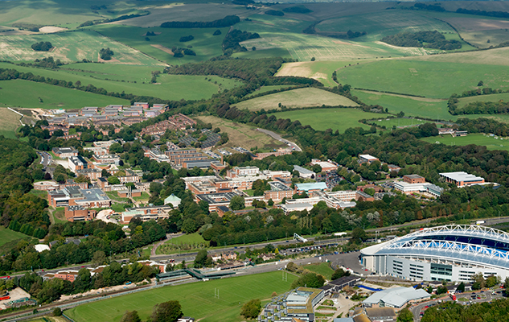

All talks will take place at Pevensey 1A6.
How to get here
With the South Downs on our doorstep, we're well-served by train, bus and road while cycling is also popular. We are nine minutes from Brighton, an hour from London and 30 minutes away from an international airport.

Train
You can reach the University of Sussex directly from Brighton Station and Lewes Station. Falmer Station is directly opposite the campus. You can walk to the campus from the station through a subway under the A27. Follow signs for the University of Sussex (the University of Brighton also has a campus at Falmer).
You can get from Brighton to Falmer in nine minutes by train. Four trains an hour go to Falmer during the day. If you are travelling from London and the west, take a train to Brighton and change there for Falmer.
The journey time from London to Brighton is just under an hour. You can also change at Lewes for Falmer, if you are coming from the east.
See National Rail Enquiries for train times.
Car
The University is at Falmer on the A27 between Brighton and Lewes, about four miles (six kilometres) from the centre of Brighton.
Follow signs for the University of Sussex, which is on the north side of the A27. The University of Brighton also has a campus at Falmer, on the south side of the A27.
If you are coming from London and the north, take the M23/A23 road towards Brighton. Before you enter Brighton, join the A27 eastbound signposting Lewes. If you're travelling from the east or west take the A27 direct to the University.
Parking on campus
Parking on campus is limited and there is normally a daily parking charge for visitors. This does not apply for open and admissions days or any visits arranged through the Student Recruitment Services Office.
There is designated visitor parking, which is signposted on campus. Car parks are not attended and you should not leave objects of value in your vehicle.
Bus
The 23, 25, 25X, 28 and 29 buses run between the centre of Brighton and the campus.
The 25 buses run from Palmeira Square in Hove, through Churchill Square and the Old Steine in Brighton, into the campus.
The 23 route runs from Brighton Marina in the east, through Hanover, into the campus.
The 28 and 29 go from Churchill Square and stop outside the University campus.
Some 5B (Hollingbury) and 50 (Hollingdean) buses also run to the campus.
Travel time between the campus and Brighton is about 20 minutes. See bus timetables and information.
Bicycle
If you're a cyclist, you can benefit from purpose-built bike lanes along Lewes Road connecting the University to the centre of Brighton.
It takes about 25 minutes to cycle to the campus and there is plenty of bike parking.
Taxi
Taxis are available at central taxi ranks and Brighton and Lewes train stations.
The campus is about four miles (six kilometres) from central Brighton but it is often quicker to catch the train to Falmer from Brighton or Lewes.
Coach
National Express Coaches to Brighton leave from London Victoria Coach Station and arrive at Pool Valley in the centre of the city.
Services are every hour during the day and take about two hours. Coaches also run to Brighton from Gatwick and Heathrow airports.
From Pool Valley, walk 100 metres to the Old Steine where you can catch a bus to the campus or take a taxi.
Plane
The closest airport to Brighton is London Gatwick. Gatwick is 30 minutes by train to Brighton.
London Heathrow is around two hours by coach.
Plan your route